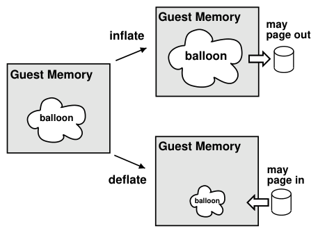
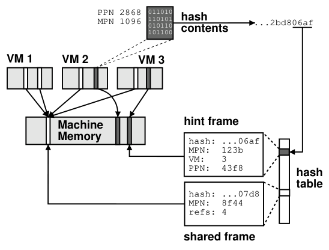
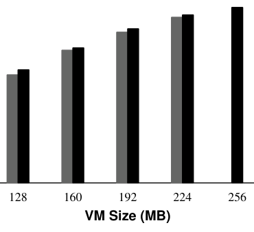
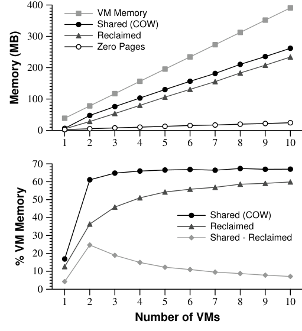
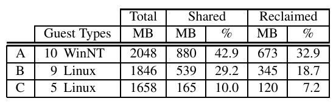
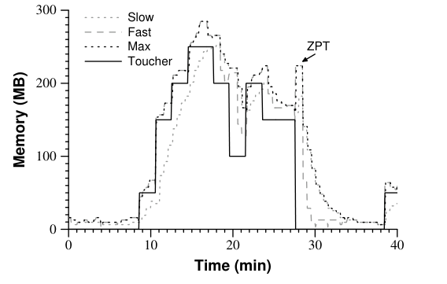
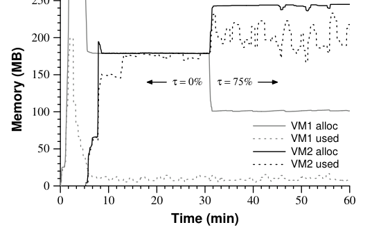
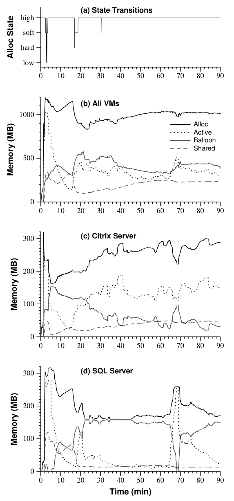

Memory Resource Management in VMware ESX Server
This page was written by an AI model to give a high-level overview of the paper. Please check the paper for detail.
Server consolidation lets administrators pack many virtual machines (VMs) onto one physical host, but each VM is configured with a fixed "physical" memory size that a commodity guest OS cannot resize at runtime. If the sum of these configured sizes exceeds actual machine memory, the system is overcommitted, and something has to decide which VM gives up which pages. ESX Server, VMware's bare-metal hypervisor for unmodified Windows and Linux guests on IA-32 hardware, needed a way to reclaim memory from VMs without any guest cooperation, while still honoring per-VM performance guarantees for server consolidation.
The obvious approach, borrowed from earlier VM systems, is to add another level of paging: the hypervisor picks a victim VM and a victim page and writes it to a host-level swap file, transparently to the guest. The paper argues this meta-level policy is fundamentally uninformed, because only the guest OS knows which of its own pages are least valuable, and that knowledge is exactly what the hypervisor lacks. Worse, a meta-level policy can trigger double paging: the hypervisor evicts a page the guest OS is simultaneously trying to evict to its own virtual disk, so the page is faulted back in from the host swap file only to be written right back out to the guest's paging device.
ESX Server's key idea is to get the guest OS to do the reclamation itself. A small balloon driver is loaded into the guest with no guest-visible interface; when the hypervisor wants memory back, it tells the driver to allocate and pin a number of guest "physical" pages, which pressures the guest's own memory manager into picking victims and, if necessary, paging them to its own virtual disk. The hypervisor then reclaims the machine pages backing the inflated balloon. This single idea, ballooning, is paired with three complementary mechanisms: an idle memory tax that uses statistical sampling of each VM's working set to charge more for unused memory inside a proportional-share allocator; content-based page sharing that hashes page contents to transparently deduplicate identical pages across VMs via copy-on-write, with no guest modification; and hot I/O page remapping that moves frequently DMA'd pages out of high memory to avoid bounce-buffer copies on devices limited to a 32-bit address space.
Mechanically, an extra level of address indirection (a per-VM pmap mapping guest "physical" page numbers to machine page numbers) makes all of this possible: ESX Server can remap, revoke, or share any guest page transparently, because the guest never sees a machine address directly. A higher-level policy combines the guest's share-based entitlement with its sampled working-set estimate into a target allocation, which ballooning and, if that proves insufficient, randomized paging are then invoked to achieve, while background page sharing continuously trims system-wide pressure.
On a single ballooned Linux VM running dbench, overhead relative to a non-ballooned VM of the same effective size ranges from 4.4% at 128 MB down to 1.4% at 224 MB. Content-based sharing among up to ten identical Linux VMs running SPEC95 reclaims up to 67% of VM memory shared and nearly 60% reclaimed; in three production deployments it reclaimed 7.2% to 32.9% of VM memory. Raising the idle memory tax from 0% to 75% in a two-VM experiment reallocates memory from an idle Windows VM to an active Linux VM running dbench, boosting its throughput by over 30%. A five-VM consolidated Exchange/Citrix/SQL Server workload overcommitted by more than 60% ran almost entirely in the system's two least-pressured reclamation states, aided by sharing 325 MB of zero pages at boot.

Key takeaways
- Ballooning: a guest-resident pseudo-driver that the hypervisor inflates or deflates, letting the guest OS pick its own reclamation victims instead of a blind meta-level policy.
- Idle memory tax: an adjustable tax rate (default 75%) makes idle pages cost more than active ones in a proportional-share allocator, so idle VMs give up memory to active ones while retaining a share-based floor.
- Active memory sampling: randomly samples a small number of a VM's pages per period (default 100 pages per 30 seconds), invalidates their mappings, and counts how many are touched to estimate working-set size with no guest involvement.
- Content-based page sharing: hashes page contents to find identical pages anywhere in the system, merges them with copy-on-write, and needs no knowledge of guest OS internals; overhead is under 0.5% of system memory and negligible CPU cost.
- Hot I/O page remapping: transparently moves frequently-DMA'd pages from high memory into low memory to cut bounce-buffer copy overhead for 32-bit-addressable devices.
From an extra level of address indirection to four coordinated reclamation mechanisms
Memory virtualization, why host-level paging alone is the wrong tool, and how ballooning, page sharing, the idle tax and I/O remapping each work.
1 · Memory virtualization: the pmap
A guest OS expects a zero-based physical address space, as on real hardware. ESX Server gives each VM that illusion by adding a level of indirection: a physical page number (PPN) is the guest's view of its own memory, a machine page number (MPN) is the real hardware page backing it, and a per-VM pmap structure maps PPNs to MPNs. The hypervisor intercepts guest attempts to modify page tables or TLB contents and maintains separate shadow page tables with the real virtual-to-machine mappings, so ordinary memory references run at full speed once cached in the hardware TLB.
Because the server owns this mapping, it can change a VM's PPN-to-MPN mapping at any time, completely transparently to the guest. Every mechanism in the paper, ballooning, page sharing, and I/O remapping, is built on this one capability: reclaim, redirect, or share a machine page without the guest ever noticing.
2 · Why naive host-level paging falls short
The straightforward way to reclaim memory is to add another level of paging: the hypervisor picks a VM and a page within it and writes it to a swap area on disk, invisibly to the guest. This forces a meta-level page replacement policy that must guess which pages are least valuable, information that in reality is known only to the guest OS. Guest paging policies are also diverse, often undocumented, and may depend on application hints, making a one-size-fits-all host policy prone to anomalies.
ESX Server's answer is to avoid guessing whenever possible, which motivates ballooning (Section 3) as the preferred mechanism, with host-level paging demoted to a fallback (Section 4).
3 · Ballooning
A small balloon module runs in the guest as a pseudo-device driver or kernel service, with no guest-visible interface; it talks to ESX Server over a private channel.
- Inflate. The server tells the driver to allocate and pin a target number of guest pages using native guest interfaces (for example
get_free_page()on Linux,MmAllocatePagesForMdl()on Windows). - Guest reclaims. This allocation pressures the guest's own memory manager. If memory is plentiful it comes from the guest's free list; if scarce, the guest OS invokes its own native page replacement policy and may page out to its own virtual disk.
- Server reclaims. The driver reports the PPN of each page it pinned, and ESX Server deallocates the backing MPN, reclaiming the machine page.
- Deflate. The server instructs the driver to free previously-allocated pages, returning memory to the guest.
If the guest accesses a ballooned PPN (expected only after a guest crash or reboot), the access faults, the server resets the balloon driver's state, and it allocates a fresh MPN as if the page were touched for the first time. Balloon drivers poll the server once per second for a target size and self-limit their allocation rate to avoid stressing the guest. Limitations: the driver may be absent, disabled, unavailable during boot, or unable to reclaim fast enough, and guest-imposed size limits bound how far a balloon can inflate. Measured overhead is covered in the Evaluation tab.
4 · Fallback: demand paging to a host swap area
When ballooning is unavailable or insufficient, ESX Server pages a VM's memory out to its own swap area on disk, without guest involvement. A swap daemon selects candidate pages using a randomized replacement policy, chosen specifically to avoid the pathological interference with native guest memory management described in Section 2, and because paging is expected to be a relatively uncommon fallback. The system clusters disk writes and always attempts to share a page (Section 5) before paging it out.
5 · Content-based page sharing

Prior systems such as Disco identified shareable pages by hooking guest OS routines like bcopy(), which requires guest source modifications unavailable to ESX Server. Instead, ESX Server identifies duplicate pages purely by their contents, which needs no guest knowledge and can find sharing opportunities regardless of when or how the duplicate data was created.
- Hash. A fast 64-bit hash of a scanned page's contents is computed and looked up in a single global hash table.
- Match or hint. A matching hash against an existing copy-on-write (COW) shared frame triggers a full byte-for-byte comparison to rule out hash collisions. If there is no match, the page is tagged as a lightweight hint frame (a reference back to its VM and PPN) rather than marked COW outright, avoiding unnecessary COW overhead on pages that never turn out to be shared.
- Share. On a confirmed match, the guest's PPN-to-MPN mapping is changed to point at the already-shared MPN, both PPNs are marked COW, and the now-redundant machine page is reclaimed.
- Write fault. Any later write to a shared page faults and transparently creates a private copy for the writer.
Each hash-table frame is 16 bytes; a 16-bit reference count per frame (with a separate overflow table for heavily-shared pages, such as the all-zero page) keeps space overhead under 0.5% of system memory. Pages are scanned randomly at a configurable rate, and sharing is always attempted before a page is paged out to disk. Results appear in the Evaluation tab.
6 · Active memory sampling
To drive an idle memory tax (Section 7), ESX Server needs to estimate how much of each VM's memory is actively used, without relying on guest-specific interfaces or page-table access bits (which DMA bypasses).
- At the start of each sampling period (by default, aligned to VM execution time), a small number of PPNs (default 100) are chosen uniformly at random.
- Each sampled page is tracked by invalidating its cached mappings (hardware TLB entries, virtualized MMU state), so the next guest access to it is intercepted.
- A touched-page count is incremented on each such intercepted access; at period end, the fraction of actively used memory is estimated as touched count divided by samples taken.
- Estimates are smoothed with two exponentially-weighted moving averages, a slow one for stability and a fast one for agility, plus an incrementally-updated variant of the fast average that reflects within-period changes. The server uses the maximum of the three, so usage increases are tracked quickly and decreases are reflected gradually.
Default sampling incurs at most 100 minor page faults per 30-second period per VM.
7 · The idle memory tax and share-based allocation
Pure proportional-share allocation gives each client (here, each VM) a memory fraction proportional to its shares, using a dynamic min-funding revocation algorithm: when one client needs more space, the client with the lowest shares-per-page ratio gives some up. This works well for isolation but ignores actual usage, so an idle VM with many shares can hoard memory while an active VM with few shares starves.
ESX Server fixes this by charging more for an idle page than an active one. For a client with S shares and an allocation of P pages, of which a fraction A is active (from Section 6), the adjusted shares-per-page ratio used for revocation incorporates an idle page cost that is controlled by a configurable tax rate τ, defaulting to 75%.
- τ = 0: pure share-based isolation; idle memory is never preferentially reclaimed.
- τ = 100%: all of a client's idle memory becomes reclaimable for more productive use.
- The 75% default reclaims most idle memory while leaving a buffer against sudden working-set growth and masking reclamation latency (ballooning, paging).
A VM whose working set grows is allowed to ramp back up to its full share-based allocation quickly, consistent with the sampling estimator's fast response to increases. Results appear in the Evaluation tab.
8 · Hot I/O page remapping
IA-32's physical address extension (PAE) mode lets hardware address up to 64 GB with 36-bit addresses, but many DMA-capable devices (for example, 32-bit PCI NICs) can only address the lowest 4 GB. Without an I/O MMU, high-memory data for such devices is typically copied through a bounce buffer in low memory, and virtualization makes this worse because even a VM configured with under 4 GB of "physical" memory may have pages mapped to machine pages that happen to sit above the 4 GB boundary.
ESX Server tracks per-page I/O activity (for example, a cache of PPN-to-MPN mappings for network transmits, augmented with a per-page copy count) and, once a high-memory page's copy count crosses a threshold, transparently remaps it into low memory using the same pmap indirection used elsewhere. For workloads that reuse a limited set of network buffer pages, this cuts the number of copies by orders of magnitude. Because remapping increases demand for the now-scarcer pool of low pages, the paper notes ongoing work on policies (from simple random replacement to cost-benefit based) for also remapping cold low pages back into high memory.
9 · Coordinating the mechanisms: allocation parameters and reclamation states
Administrators set three parameters per VM: a min size (guaranteed floor), a max size (the guest-visible physical memory size), and shares (proportional entitlement). Admission control reserves machine memory for min size plus per-VM overhead (typically 32 MB, for the frame buffer and structures like the pmap and shadow page tables) before a VM is allowed to power on, and reserves disk swap space for the remainder (max minus min).
The server tracks four system-wide free-memory thresholds, defaulting to 6% (high), 4% (soft), 2% (hard), and 1% (low) of system memory:
- High. Free memory is sufficient; no reclamation.
- Soft. Reclaim via ballooning; fall back to paging only where ballooning is impossible.
- Hard. Rely on paging to forcibly reclaim memory.
- Low. Continue paging and additionally block execution of VMs above their target allocation.
Hysteresis (returning to a higher state only after significantly exceeding its threshold, not just crossing it) prevents rapid state flapping. Target allocations for all VMs are recomputed on parameter changes, VM power-on/off, threshold crossings, and periodic working-set rebalancing. How well this coordination performs under consolidated, overcommitted workloads is covered in the Evaluation tab.
Evaluation
Each mechanism is evaluated with its own targeted experiment, plus production measurements for page sharing and a combined consolidation experiment.
Experiments used different ESX Server test machines per mechanism, all Intel IA-32 multiprocessors, running unmodified Red Hat Linux 7.2 and Microsoft Windows 2000 guests. There are no end-to-end comparisons against other hypervisors; each experiment isolates one mechanism against a non-virtualized or differently-configured baseline.
| What | Value in the paper |
|---|---|
| Platforms | Dell Precision 420 (dual 800 MHz Pentium III); Dell PowerEdge 1400SC (dual 933 MHz Pentium III); IBM Netfinity 8500R (eight 550 MHz Pentium III) |
| Guests | Red Hat Linux 7.2; Windows 2000 Advanced Server / Professional / Server |
| Workloads | dbench with 40 clients (fileserver I/O); SPEC95 (CPU-bound); a 5-VM consolidation of Microsoft Exchange, Citrix MetaFrame, and Microsoft SQL Server; a synthetic memory-toucher application |
| Baselines | Non-ballooned VMs at equivalent configured sizes; page sharing enabled vs. disabled; idle tax rate τ = 0% vs. τ = 75% |
| Metrics | dbench throughput (MB/sec); memory shared / reclaimed (MB and % of VM memory); sampled active-memory estimate (MB); ESX Server allocation state and per-VM allocation over time (MB) |
Ballooning closely tracks non-ballooned performance

What it shows. dbench throughput (MB/sec) for a single Linux VM with 40 clients. Black bars show throughput when the VM is configured with main memory from 128 MB to 256 MB directly. Gray bars show the same VM configured with 256 MB and then ballooned down to each of those sizes.
What to take from it. Ballooned performance tracks non-ballooned performance closely, with overhead ranging from 4.4% at 128 MB (a 128 MB balloon) down to 1.4% at 224 MB (a 32 MB balloon). The paper attributes this gap to guest OS data structures sized relative to configured "physical" memory, so a 256 MB VM ballooned down has slightly less free space than a VM configured with that smaller size from boot.
Page sharing scales with the number of homogeneous VMs

What it shows. Sharing metrics for one to ten identical Linux VMs (40 MB each) running SPEC95 for thirty minutes. The top graph plots absolute memory shared, reclaimed, and zero pages (MB) against VM count; the bottom graph plots the same metrics as a percentage of aggregate VM memory, plus "shared minus reclaimed" (the memory needed for the single retained copy of each shared page).
What to take from it. Even a single VM shares about 5 MB (about 55% from the zero page). Total shared and reclaimed memory grow roughly linearly with VM count after an initial jump between one and two VMs, and most sharing is due to redundant code and read-only data, not zero pages. As VM count grows, sharing approaches 67% of aggregate VM memory, with nearly 60% actually reclaimed, meaning roughly two-thirds of memory overlaps across VMs in this best-case homogeneous setup.
Production deployments see meaningful but workload-dependent sharing

What it shows. A table of sharing metrics from three live ESX Server deployments: (A) ten Windows NT VMs at a Fortune 50 company running database, web, and development applications; (B) nine Linux VMs for a nonprofit running mail and web servers; (C) five Linux VMs at VMware running web proxy, mail, and remote-access services. Columns give total, shared, and reclaimed memory in MB and as a percentage.
What to take from it. Workload A reclaimed 673 MB (32.9% of 2048 MB total VM memory); workload B reclaimed 345 MB (18.7% of 1846 MB, of which 70 MB was zero pages); workload C reclaimed 120 MB (7.2% of 1658 MB, of which 25 MB was zero pages). Real, heterogeneous production workloads reclaim noticeably less than the best-case homogeneous SPEC95 experiment, but still a meaningful fraction of total VM memory, and sharing is confirmed to be driven mostly by non-zero, redundant code and data rather than zero pages.
Statistical sampling tracks a VM's actual working set

What it shows. Memory (MB) over 40 minutes for a Windows VM running a synthetic memory-toucher application that varies the amount of memory it repeatedly touches between 50 MB and 250 MB. The solid black line is the actual touched amount; the dotted black line is the sampling-based estimate, computed as the max of a fast moving average (gray dashed) and slow moving average (gray dotted); a labeled spike ("ZPT") appears after the toucher terminates.
What to take from it. The estimate rises quickly as more memory is touched (tracking the fast average) and falls more slowly as less is touched (tracking the slow average), the asymmetric behavior the design intends. The ZPT spike, caused by the Windows "zero page thread" clearing freed pages when no other thread is runnable, is an OS-specific artifact the paper says does not occur under Linux, illustrating that the sampling estimator can pick up guest-internal background activity beyond the intended workload.
Raising the idle tax reallocates memory from an idle VM to an active one

What it shows. Two VMs, each configured with 256 MB and identical shares, in an overcommitted system (about 360 MB available for VMs). VM1 (Windows, gray) is idle after booting; VM2 (Linux, black) runs dbench. Solid lines plot each VM's ESX Server allocation over time; dotted lines plot estimated active usage. The tax rate τ changes partway through the run from 0% to 75%.
What to take from it. At τ = 0%, both VMs converge on the same 179 MB allocation despite VM2 actively using far more memory than idle VM1, the pure proportional-share outcome the paper calls out as wasteful. Raising τ to 75% reclaims idle memory from VM1 and reallocates it to VM2, increasing dbench throughput by over 30%. This directly demonstrates the mechanism's purpose: convert unused share-based allocation into usable memory for an active VM without abandoning share-based guarantees.
A consolidated, overcommitted five-VM workload stays mostly in the low-pressure states

What it shows. A 90-minute run on an 8-way system with only 1 GB available for VMs, consolidating Exchange server/client, Citrix MetaFrame server/client, and SQL Server VMs configured to use 1472 MB total plus 160 MB overhead, over 60% overcommitted. Panel (a) plots ESX Server's allocation state over time (low/hard/soft/high); panel (b) plots aggregate allocation, active usage, balloon, and shared memory across all five VMs; panels (c) and (d) show the same per-VM metrics for the MetaFrame server and SQL Server VMs respectively.
What to take from it. Except for brief transitions early on, the system spends nearly all its time in the high and soft states, meaning ballooning (not forced paging) handles almost all reclamation. At boot, concurrent Windows zeroing of all VM memory drives immediate overcommitment, but the "share before swap" optimization reclaims 325 MB of zero pages via sharing, leaving only 35 MB of non-zero data actually written to disk at that peak, and about 200 MB is saved by sharing over the full run. Per-VM allocations (MetaFrame, SQL Server) track each VM's active usage and its configured min size floor, and reallocate quickly when a VM's workload (for example, a long SQL query) suddenly becomes active.
FAQ
Q·What problem is ESX Server's memory management actually solving?▾
How to let administrators configure virtual machines whose combined memory sizes exceed the physical machine's actual memory (overcommitment), while still giving each VM predictable performance and without requiring any changes to the guest OS or applications running inside it.
Q·Why not just swap a VM's memory to disk the way an OS swaps a process?▾
The hypervisor has no visibility into which of a VM's pages the guest OS considers least valuable, so it is forced to guess with a meta-level policy, risking performance anomalies from unintended interaction with the guest's own memory manager. It can also trigger double paging: the hypervisor pages out a page the guest simultaneously decides to page out itself, wasting a disk round-trip.
Q·What is ballooning, in one sentence?▾
A tiny driver inside the guest OS that, on the hypervisor's instruction, allocates and pins guest memory, which pressures the guest's own memory manager into picking and reclaiming its own least-valuable pages, after which the hypervisor reclaims the underlying machine memory.
Q·What happens if a VM's balloon driver crashes, is disabled, or isn't installed?▾
ESX Server falls back to host-level demand paging with a randomized victim-page policy, chosen specifically because it avoids the pathological guest interactions a smarter-looking meta-level policy could cause. If a ballooned page is somehow accessed again (expected mainly after a guest crash or reboot), the access faults, the balloon driver's state is reset, and a fresh machine page is allocated as if touched for the first time.
Q·Why isn't plain proportional-share (ticket/weight-based) allocation enough?▾
Pure share-based allocation partitions memory strictly by share ratio, regardless of actual usage. An idle VM with many shares can hoard memory it isn't using while an active VM with few shares is starved, even though reallocating the idle memory would improve overall utilization without violating any VM's guaranteed minimum.
Q·How does the idle memory tax fix that?▾
It charges more for an idle page than an active one when computing each VM's effective shares-per-page ratio for revocation. A configurable tax rate τ (default 75%) controls how much of a VM's idle memory becomes reclaimable; τ = 0% is pure share-based isolation, τ = 100% makes all idle memory reclaimable.
Q·How can the hypervisor tell which pages a VM is actively using without the guest's help?▾
By randomly sampling a small number of the VM's pages each period, invalidating their cached address mappings so the next access to each is intercepted, and counting how many of the sampled pages get touched. The resulting fraction, smoothed with fast and slow moving averages, estimates the VM's active working set without reading any guest-internal state.
Q·How does content-based page sharing find duplicates without understanding the guest OS?▾
It hashes the raw contents of scanned pages and looks for matches in a global hash table, independent of what the data is or how it got there. A hash match triggers a full content comparison to rule out collisions, and confirmed duplicates are merged via copy-on-write, so a write to a shared page transparently creates a private copy for the writer.
Q·What is a "hint frame" and why does it matter?▾
When a scanned page's hash finds no match, marking it copy-on-write outright would add overhead to every future write, even though most such pages are never actually shared. A hint frame instead just remembers the page's location (VM and PPN); if a later scan finds a hash match against it, the hint page's contents are rehashed to check it hasn't changed, and only then is it promoted to a real shared, copy-on-write page.
Q·Does page sharing slow the system down?▾
The paper reports negligible CPU overhead: in controlled experiments, aggregate throughput of CPU-bound benchmarks was actually 0.5% higher on average with sharing enabled than disabled, ranging from 1.6% lower to 1.8% higher, and space overhead for the sharing data structures was under 0.5% of system memory.
Q·What is hot I/O page remapping solving?▾
Devices limited to 32-bit DMA addresses can't reach memory above 4 GB, so data there is normally copied through a low-memory bounce buffer, an overhead virtualization worsens because even small VMs can have pages mapped to high machine memory. ESX Server tracks per-page DMA copy counts and transparently remaps frequently-copied ("hot") pages into low memory, cutting the number of bounce-buffer copies by orders of magnitude for workloads that reuse a limited set of buffer pages.
Q·How does ESX Server decide, moment to moment, which of these mechanisms to use?▾
System-wide free memory is tracked against four thresholds (high, soft, hard, low; defaulting to 6%, 4%, 2%, 1%). In the high state nothing is reclaimed; in soft, ballooning is preferred and paging is used only where ballooning can't help; in hard, paging is used directly; in the rare low state, paging continues and VMs above their target allocation are briefly blocked. Hysteresis prevents the system from flapping rapidly between states.
Q·Is this still how virtualization hypervisors manage memory today?▾
The paper itself does not say, since it describes ESX Server 1.5 from 2002. Ballooning and content-based (now often called transparent) page sharing became foundational techniques widely adopted across later VMware products and other hypervisors (general knowledge); this summary does not independently verify current implementations.